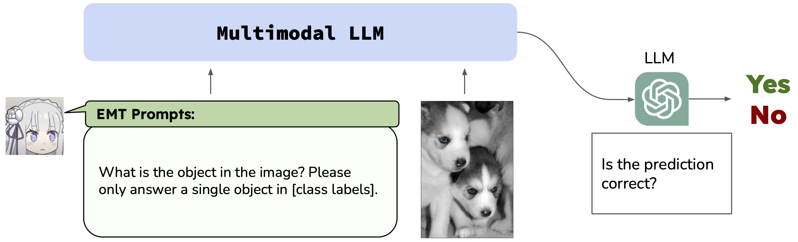
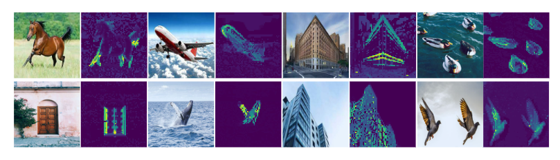
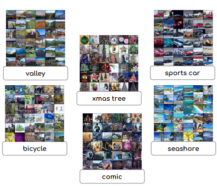

|
Hi, I am Peter Tong, also go by the name Shengbang Tong(童晟邦). I am a first-year PhD student in NYU Courant CS advised by Professor Yann LeCun and Professor Saining Xie. I recently graduateed from UC Berkeley with a triple major in Computer Science, Applied Mathematics(Honor) and Statistic(Honor). I am from Nanjing, China and Melbourne, Australia. Email / Resume / Twitter / Google Scholar / Github |
{kind=link}
|
I recently graduated from UC Berkeley with a triple major. I am a first-year CS PhD student in NYU Courant advised by Prof. Yann LeCun and Prof. Saining Xie. I was a researcher in Berkeley Artificial Intelligence Lab(BAIR) advised by Prof. Yi Ma and Prof.Jacob Steinhardt. I am interested in world model, unsupervised/self-supervised learning, generative models and multimodal models. I would like to thank all my mentors-Yubei, Xili, Erik and collaborators for the incredible journey I had in my undergrad. |
|

|
Shengbang Tong, Zhuang Liu, Yuexiang Zhai, Yi Ma, Yann LeCun, Saining Xie Under Review Is vision good enough for language? Our research reveals that the visual capabilities in recent multimodal LLMs (MLLMs) still exhibit systematic shortcomings. We identify ''CLIP-blind pairs'' - images that CLIP perceives as similar despite their clear visual differences. With these pairs, we construct the Multimodal Visual Patterns (MMVP) benchmark. MMVP exposes areas where state-of-the-art systems, including GPT-4V, struggle with straightforward questions across nine basic visual patterns. As an initial effort to address these issues, we propose a Mixture of Features (MoF) approach, demonstrating that integrating vision self-supervised learning features with MLLMs can significantly enhance their visual grounding capabilities. |

|
Shengbang Tong*, Erik Jones*, Jacob Steinhardt Accepted by NIPS 2023 Deployed multimodal systems can fail in ways that evaluators did not anticipate. In order to find these failures before deployment, we introduce MULTIMON, a system that automatically identifies systematic failures. |

|
Shengbang Tong*, Yubei Chen*, Yi Ma, Yann LeCun Under Review Inspired by the newly proposed principle, our work proposes a minimalist method for self-supervised learning that tremendously reduces the epochs which SSL methods take to converge. |
|  |
Yuexiang Zhai, Shengbang Tong, Xiao Li, Mu Cai, Qing Qu, Yong Jae Lee, Yi Ma Accepted by CPAL 2024 TLDR: Fine-Tuning multimodal large language models (MLLMs) leads to catastrophic forgetting. |
|  |
Yaodong Yu*, Tianzhe Chu*, Shengbang Tong, Ziyang Wu, Druv Pai, Sam Buchanan, Yi Ma Accepted by CPAL 2024 Through extensive experimental results, we demonstrate that when employing a white-box transformer-like architecture known as CRATE, whose design explicitly models and pursues low-dimensional structures in the data distribution, segmentation properties, at both the whole and parts levels, already emerge with a minimalistic supervised training recipe. Layer-wise finer-grained analysis reveals that the emergent properties strongly corroborate the designed mathematical functions of the white-box network. |
|  |
Tianzhe Chu*, Shengbang Tong*, Tianjiao Ding*, Xili Dai, Benjamin Haeffele, Rene Vidal, Yi Ma Accepted by ICLR 2024 In this paper, we propose a novel image clustering pipeline that leverages the powerful feature representation of large pre-trained models such as CLIP and cluster images effectively and efficiently at scale. We show that the pre-trained features are significantly more structured by further optimizing the rate reduction objective. |

|
Yaodong Yu, Sam Buchanan, Druv Pai, Tianzhe Chu, Ziyang Wu, Shengbang Tong, Benjamin Haeffele, Yi Ma Accepted by NIPS 2023 In this paper, we contend that the objective of representation learning is to compress and transform the distribution of the data towards a mixture of low-dimensional Gaussian distributions supported on incoherent subspaces. From this perspective, popular deep networks such as transformers can be naturally viewed as realizing iterative schemes to optimize this objective incrementally. |

|
Shengbang Tong*, Xili Dai*, Yubei Chen, Mingyang Li, Zengyi Li, Brent Yi, Yann LeCun, Yi Ma Accepted by CPAL 2024 This paper proposes a new unsupervised method to learn a structured representation that may serve both discriminative and generative purpose |

|
Xili Dai, Ke Chen, Shengbang Tong, Jingyuan Zhang, Xingjian Gao, Mingyang Li, Druv Pai, Yuexiang Zhai, Xiaojun Yuan, Heung Yeung Shum, Lionel M.Ni, Yi Ma Accepted by CPAL 2024 This paper explores the natural inverse in Covolutional Sparse Coding neural network and its application in generative models. |

|
Tianjiao Ding, Shengbang Tong, Kwan Ho Ryan Chan, Xili Dai, Yi Ma,Benjamin David Haeffele Accepted by ICCV 2023 This paper proposes a new unsupervised method to learn a represenation and cluster for real life dataset such as CIFAR-10, CIFAR100 and Tiny-ImageNet-200. |

|
Xili Dai*, Mingyang Li*, Pengyuan Zhai, Shengbang Tong, Xingjian Gao, Shaolun Huang, Zhihui Zhu, Chong You, Yi Ma Accepted by NIPS 2022 Our method uses differentiable optimization layers that are defined from convolutional sparse coding as drop-in replacements of standard convolutional layers in conventional deep neural networks. We show that such models have equally strong empirical performance on CIFAR-10, CIFAR-100 and ImageNet datasets when compared to conventional neural networks. |

|
Shengbang Tong, Xili Dai, Ziyang Wu, Mingyang Li, Brent Yi, Yi Ma Accepted by ICLR 2023 We propose a minimal computational model for learning a structured memory of multiple object classes in an incremental setting |

|
Xili Dai*, Shengbang Tong*, Mingyang Li*, Ziyang Wu*, Kwan Ho Ryan Chan, Pengyuan Zhai, Yaodong Yu, Michael Psenka, Xiaojun Yuan, Heung Yeung Shum, Yi Ma Accepted by Entropy Journal We propose a new computational framework for learning an explicit generative model for real-world dataset. |
|
Feel free to reach out if you are interested in computer vision and want to chat with me. |